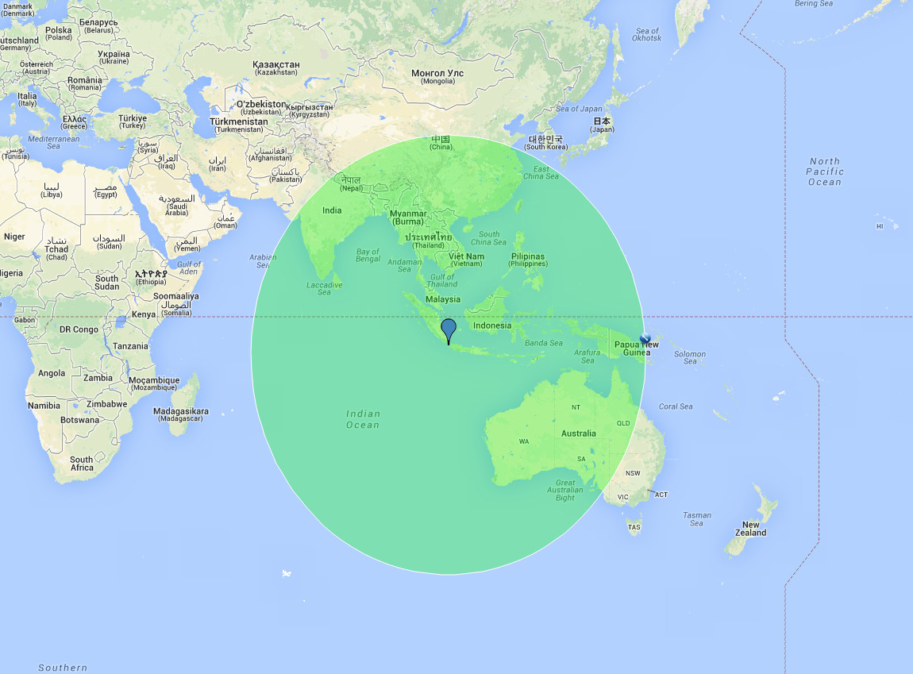

Mount Krakatoa is located in Indonesia north-west of Jakarta. The co-ordinates are: -6°06'7.20" S 105°25'22.80" E.
The beginning of the amazing events at Krakatoa in 1883 date to May 20 when there were initial rumblings and venting from the volcano, which had been dormant for about 200 years. Over the next three months, there were regular small blasts from Krakatoa out of three vents. On August 11, ash started spewing from the small mountain. Eruptions got progressively stronger until August 26, when the catastrophe began. At noon, the volcano sent an ash cloud 20 miles into the air and tremors triggered several tsunamis. This turned out to be just a small indication, however, of what would follow the next day. For four-and-a-half hours beginning at 5:30 a.m. on August 27, there were four major and incredibly powerful eruptions. The last of these made the loudest sound ever recorded on the planet. It could be heard as far away as central Australia and the island of Rodrigues, 3,000 miles from Krakatoa. The air waves created by the eruption were detected at points all over the earth. The eruption had devastating effects on the islands near Krakatoa. It set off tremendous tsunamis that overwhelmed hundreds of villages on the coasts of Java and Sumatra. Water pushed inland several miles in certain places, with coral blocks weighing 600 tons ending up on shore. At least 35,000 people died, though exact numbers were impossible to determine. The tsunamis traveled nearly around the world–unusually high waves were noticed thousands of miles away the next day.